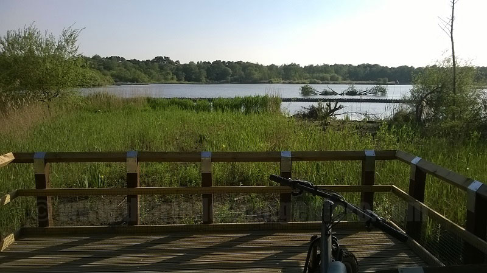
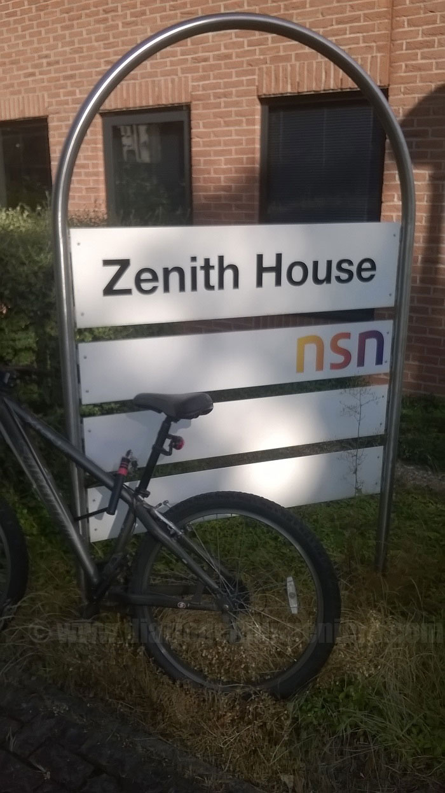
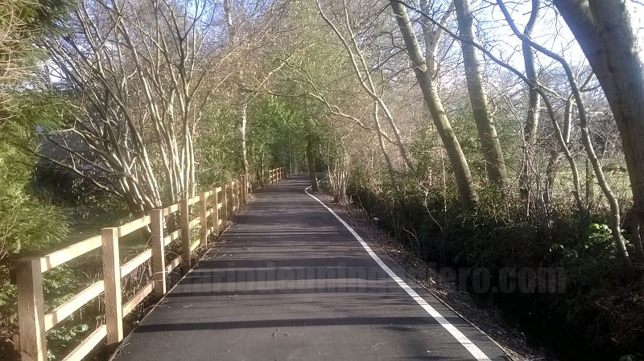
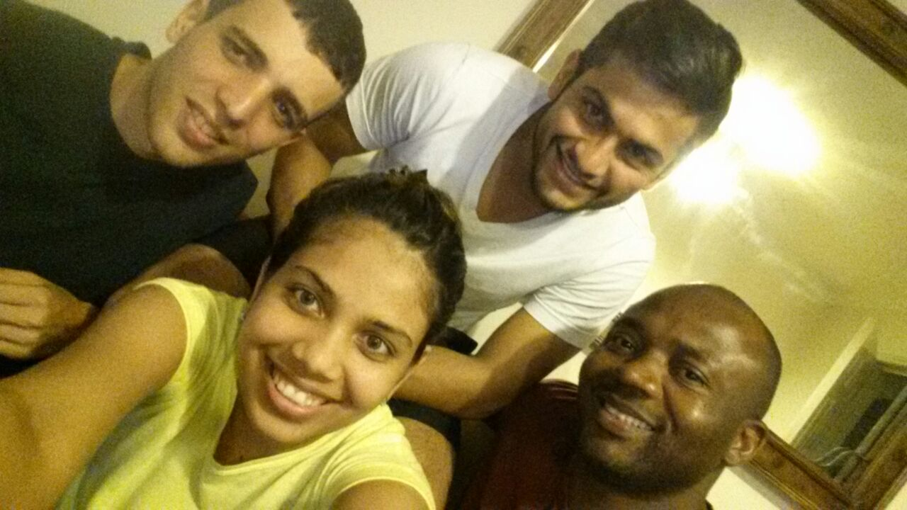

Es una pequeña ciudad en el distrito de Hampshire famosa por tener el lago de agua dulce más grande de Inglaterra. Fleet está calificada como una de las mejores ciudades para vivir del Reino Unido, habiendo acabada la primera en las últimas ediciones por el Halifax Quality of Life study.

Yo estuve trabajando en NSN que se encuentra en Ancells Park Business Park, junto a grandes empresas de tecnología como Anite o British Telecom.
Es una ciudad que cuenta con 2 grandes zonas empresariales y enfocadas al sector tecnológico la mayoría.
Resaltar si cabe que la mayoría de la gente que trabaja ahí son extranjeros o gente venida de lejos de Inglaterra. Esto es debido a que los ingleses suelen orientar
su carrera más al ámbito financiero y suelen preferir trabajar en Londres que es donde más se gana.
Además de exisitir este complejo industrial también contaba con un par de campos de golf y multitud de centros comerciales lo que le hacía a la ciudad tener cierto dinamismo.
Además al estar cerca de Londres muchos trabajadores elegian esta ciudad por poder disfrutar de las ventajas del campo, como menor ruido, respirar un aire mejor, y más tranquilidad.
En NSN trabaje en la adaptación de un nuevo módulo de radio para todas las BTS´s manteniendo todas las mejoras de los últimos diseños doblando la capacidad de banda.
A finales de 2014 la empresa informa de que va a trasladar el proyecto a la India para su nuevo plan estratégico en el que se estaban reduciendo costes, ofreciendo diversas opciones para trasladar a la gente del departamento.

Aun así fueron muy pocos los que aceptaron movilidad en Inglaterra y casi nulos los que fueron al nuevo emplazamiento.
Tanto Nokia Networks como Ericsson en la actualidad están amenazadas con desaparecer, debido al fuerte empuje de Hawei, por ello ambas vendieron su parte móvil.
Sólo mantuvieron las estaciones que es donde existe un mayor margen de beneficios y han procedido a deslocalizar las empresas fuera de Europa, personal imprescindible, comerciales, ventas y logística, dirección y diseño de arquitecturas.
Dejando la parte de fabricación y también diseño en los últimos tiempos a países emergentes que puedan competir con los precios de China.
Nokia de hecho fue la última en sucumbir ante el arrastre de China con sus móviles Lumia, pero al final la realidad puede con la utopía y tuvieron que desaparecer.

Fleet no es una ciudad que tenga muchas cosas que hacer, estuve viviendo un año y medio pero al cabo de un mes ya la tenía más bien vista.
Sin embargo está bien comunicada con Londres por tren y carretera, haciéndola una ciudad bastante atractiva ya que tienes una gran tranquilidad y puedes tener Londres al alcance de la mano.
Lo único malo la carestía de viajar en tren a Londres que aun con las tarjetas descuento sale por unas 20 libras ida y vuelta, estando a 45 km de la ciudad.
Nada más llegar me hice con una bicicleta de segunda mano y con ella me pude mover fácilmente.
Recordar que en cualquier pueblo o ciudad en Inglaterra por muy pequeña que sea los sitios suelen estar bastante lejos ya que son ciudades que se extienden en superficie, formadas por muchas casas pequeñas con grandes jardines, y con pocas torres en altura.
En Fleet lo máximo que había eran 3 plantas.
Estuve viviendo los primeros meses con una mujer china y un americano, ya estaba acostumbrado a lidiar con gente de otros países aunque en este caso tuve algún que otro problema.
Al mismo tiempo fui expandiendo mi círculo de amigos en la ciudad que básicamente lo formaban gente de mi edad de mi trabajo, y conocidos de mis amigos.
Mis amigos eran del sur de Europa como yo, italianos, griegos y españoles.

Más tarde cambiaría de casa y compartiría piso con un indio y una india, y más tarde con un nigeriano.
Todos ingenieros pero educados en su país salvo el indio que por su inglés y su forma de hablar, parece como si fuera británico. En esta última casa a parte de aprender muchas cosas como en las casas anteriores estuve bastante bien por la mentalidad abierta de estas personas.
Recuerdo ir a jugar al futbol todos los domingos con mis compañeros de piso y estar largas tardes.
Allí casi todos los campos de futbol son de hierba ya que debido a la lluvia constante no necesita apenas mantenimiento.
© 2016 - All Rights Reserved - Diseñada por Sergio López Martínez
![[Valid RSS]](https://www.feedvalidator.org/images/valid-rss-rogers.png "Validate my RSS feed")